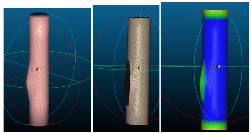
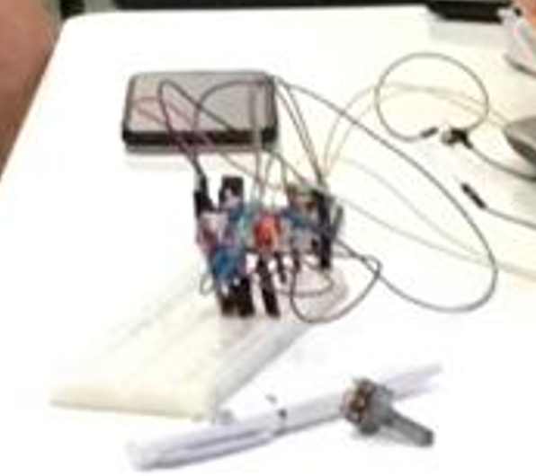

Projetos
Mapeamento e monitoramento de estruturas submarinas.
Neste projeto, viso utilizar a tecnologia de escaneamento 3d e nuvem de pontos para encontrar falhas ou imperfeiçoes em linhas de produção submarinas como dutos de oleo e gas.

tambor inteligente para ajudar na comunicação de crianças com Autismo.
durante meu periudo na bluebots, ajudei a desenvolver um tambor para ajudar crianças com TEA (transtorno do espectro Autista)a se comunicar na sala de aula, durante o projeto sugeri a utilização de microfones e um arduino para captar e detectar padroes e variaçoes nas
